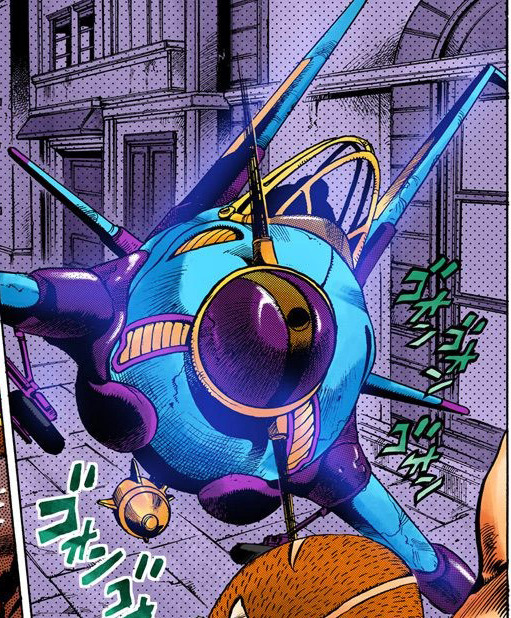
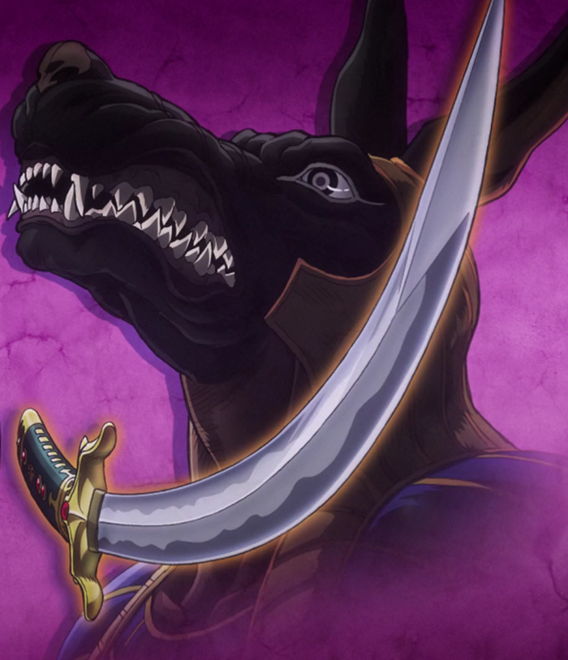
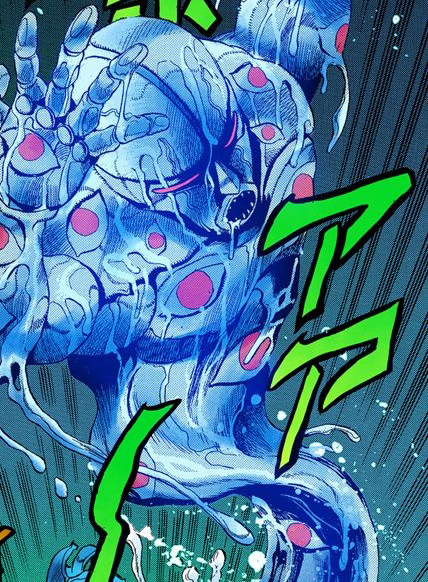
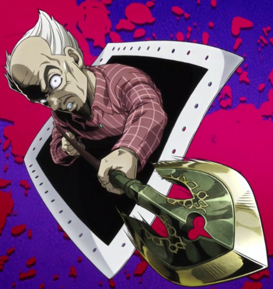
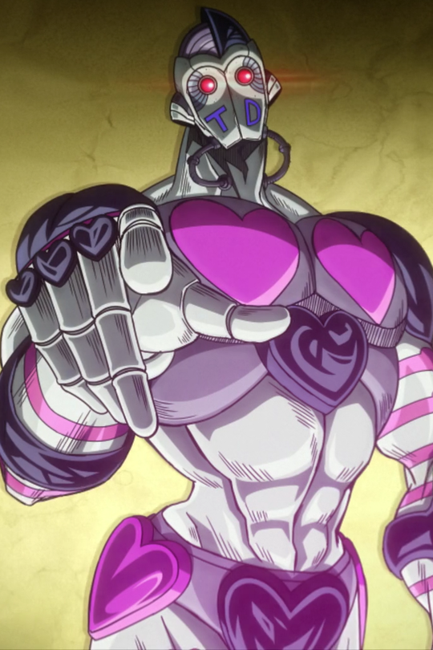

Achtung Baby

Stand Master~ Shizuka Joestar
| Power - E | Speed - E | Range - N/A | Persistence - A | Precision - E | Potential - A |
|---|
Description
Achtung Baby has the ability to make Shizuka invisible. The power is directly linked to Shizukas stress level. In cases of extreme distress the stand can render anything within a several foot radius invisible for a short period of time. When Shizuka calms down, all the objects that were turned invisble will become visible again. In its current state Achtung Baby is not incredibly powerful. However with its high potential stat, Shizuka Joestar could be incredibly powerful in the future.
Manga Debut: Chapter 315
Anime Debut: Diamond is Unbreakable Episode 13
Aerosmith
Stand Master~ Narancia Ghirga
| Power - B | Speed - B | Range - B | Persistence - C | Precision - E | Potential - C |
|---|
Description
Aerosmith is a powerful, multiuse stand. The Stand manifests itself as a toy plane controlled by the very small pilot, Mr. Smith. Aerosmith is equipped with small machine guns that can fire an infinite amount of tracer rounds. The stand is also equipped with a single bomb (about the power of a hand grenade). Along with the Stands impressive power, it is equipped with a carbon dioxide radar. The radar can detect enemy positions when they exhale. It can also pick up smaller amounts to locate animals and insects.
Manga Debut: Chapter 470
Anime Debut: Golden Wind Episode 9
Anubis
Stand Master~ ???
| Power - B | Speed - B | Range - E | Persistence - A | Precision - E | Potential - C |
|---|
Description
Anubis is an extremely dangerous, combat oriented stand that becomes harder to fight the longer it is in combat. Even though it must possess someone in order to be used, it is extremely dangerous and should be avoided at all costs. If the sword is drawn from its sheath the person who drew it will be under Anubis' control, no matter they're willpower.
Manga Debut: Chapter 193
Anime Debut: Stardust Crusaders Episode 28
Aqua Necklace
Stand Master~ Angelo Katagiri
| Power - C | Speed - C | Range - A | Persistence - A | Precision - C | Potential - E |
|---|
Description
Aqua Necklace is made of liquid (similarly to Geb). Because of its liquid state, the stand is exceptionally fast and evasive. If the Stand enters the body, it is certain that the victim die. However, Aqua Necklace cannot break through a rubber glove and any damage it takes is still applied to Angelo. The stand can also disguise itself as any liquid, including a vapor. The Stand also has a secondary power, possesion. If the victim ingests Aqua Necklace, they can become possessed. If they are possessed, Angelo can act through the victim.
Manga Debut: Chapter 269
Anime Debut: Diamond is Unbreakable Episode 1
Atom Heart Father
Stand Master~ Yoshihiro Kira
| Power - E | Speed - E | Range - N/A | Persistence - A | Precision - E | Potential - E |
|---|
Description
Atom Heart Father is bound to a Polaroid camera that takes pictures with several extraordinary properties. The first is that it allows people to see the ghost of Yoshihiro Kira, who is invisible to the naked eye. But Kira only exists within the photographs and can influence anything else in the photo. However, the Stand has one glaring weakness, if a close up of Kira is taken and the camera is destroyed, the Stand can never be used again.
Manga Debut: Chapter 365
Anime Debut: Diamond is Unbreakable episode 25
Atum
Stand master~ Telence T. D'Arby
| Power - D | Speed - C | Range - D | Persistence - B | Precision - D | Potential - D |
|---|
Description
Atum is an extremely threatening stand because of its ability to steal souls and read minds. Much like D'arby's brother's stand Osiris, he has the ability to steal the souls of anyone who has admitted defeat. Which D'arby uses videogames to challenge his oppenents. Of course the oppenent must bet their soul before Atum can steal it completely. However he can partially steal a soul without a bet. Atum's other power is the ability to read a person's soul for simple yes and no answers.
Manga Debut: Chapter 228
Anime Debut: Stardust Crusaders Episode 40